Resolve support cases with multi-agent workflows
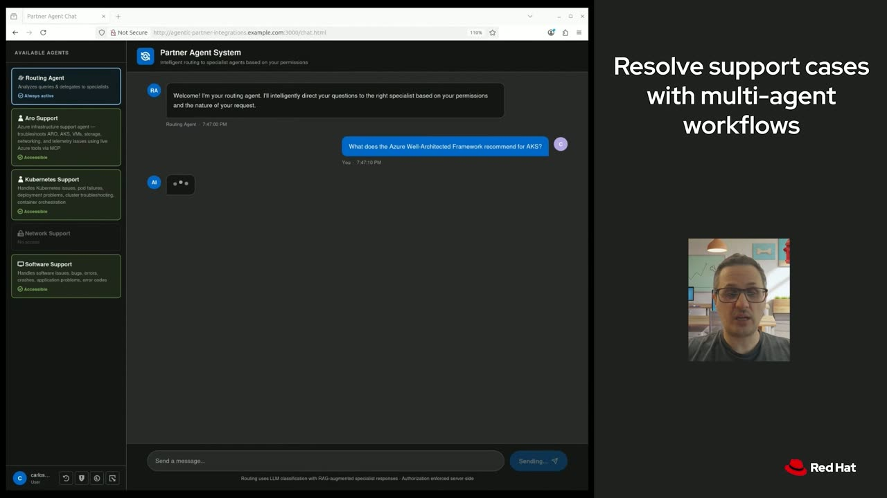
Official description
See how a multi-agent system diagnoses and resolves support cases across partner ecosystems. This demo showcases the Agentic Partners Integration AI quickstarts, built on Azure and Red Hat OpenShift AI (ARO) with MCP and open-source components. Learn how agents share context, orchestrate actions, and automate resolution. Leave with a reference architecture and patterns to build your own agentic workflows.
Summary
Overview
This five-minute live demo from Red Hat shows a multi-agent system that diagnoses and resolves support cases across partner ecosystems, built on Azure and Red Hat OpenShift AI. The session walks through deploying an MCP server from a catalog and consuming it within an agentic application that handles routing, role-based access, and auditing.
Key announcements
- Deploying an Azure MCP server from the OpenShift AI MCP catalog [00:01:38m05sm10s
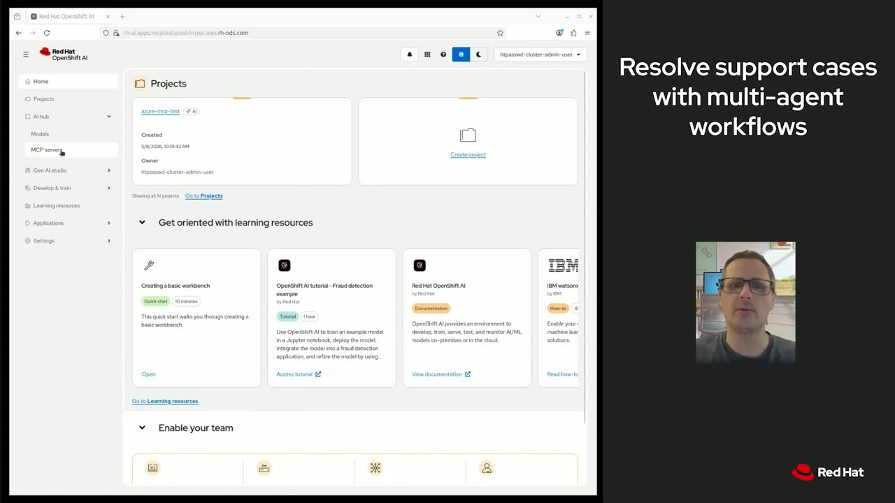
p05s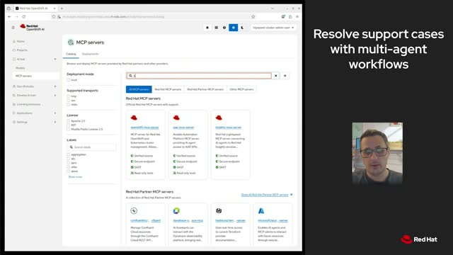
p10s] — The catalog provides pre-built MCP servers that can be browsed, picked, and deployed to a cluster, handling the container image, configuration, and authentication via managed identity without custom glue code. - Multi-agent support resolution quickstart [00:00:24
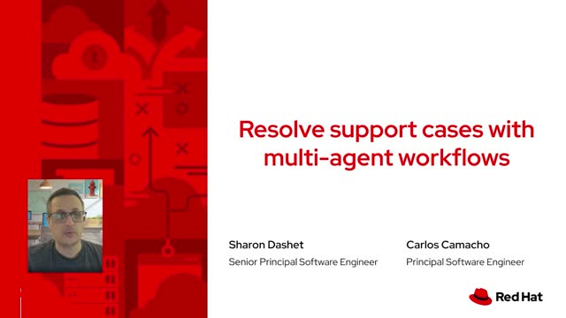
m05s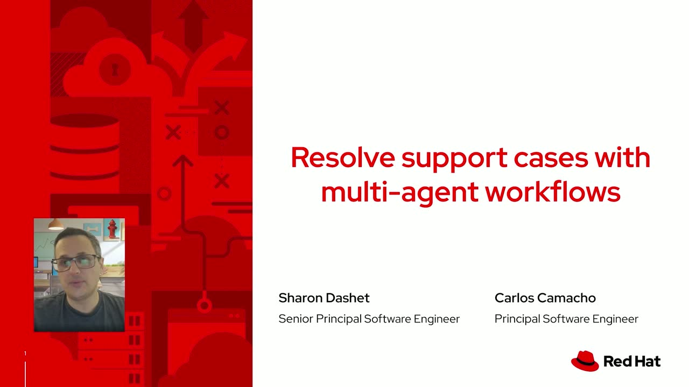
m10sp05s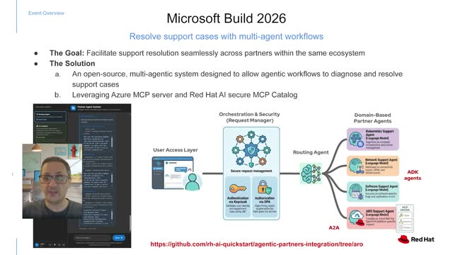
p10s] — An open-source multi-agentic system that diagnoses and resolves problems across partners in the same ecosystem, leveraging the Azure MCP server and Red Hat AI secure MCP catalog. - Role-based access enforcement with audit logging [00:04:38
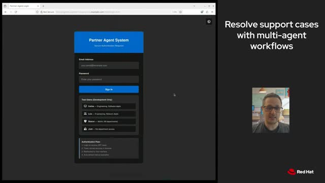
m05s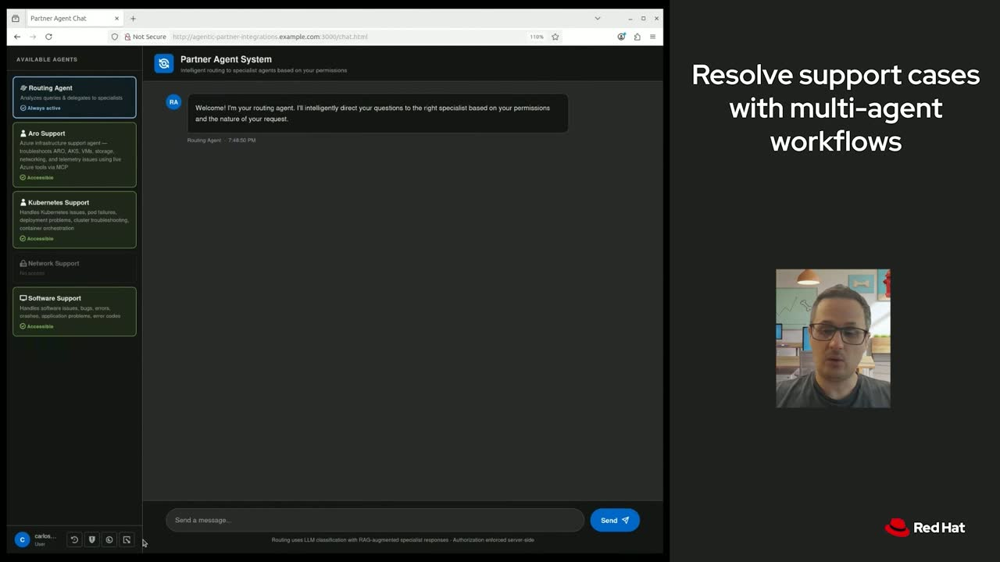
m10s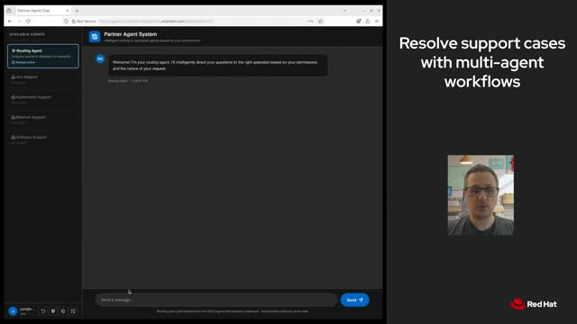
p05s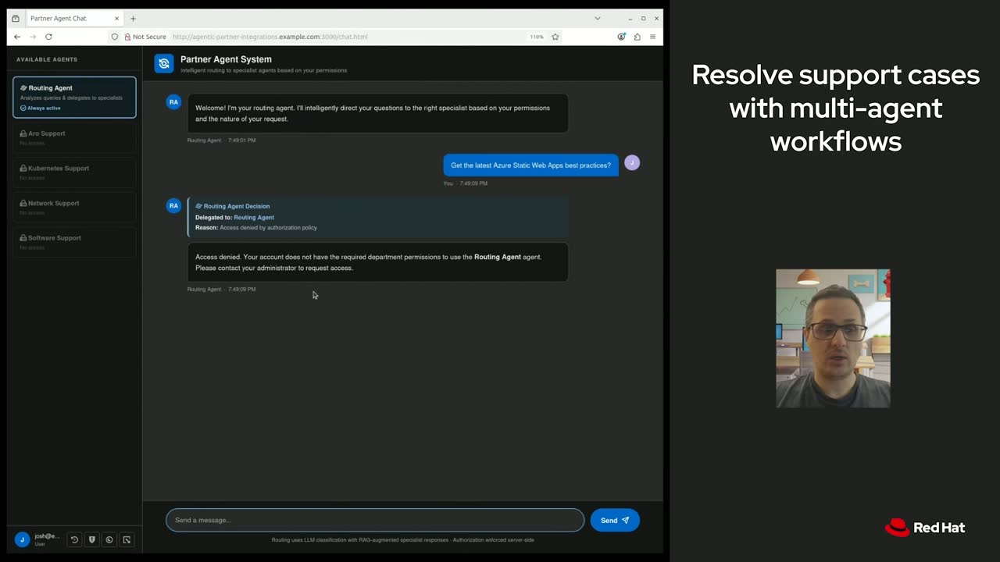
p10s] — A user without department membership (Josh) is denied access to all agents, with the denial recorded in the audit log and trail.
{kind=link}
{kind=link}
{kind=link}
{kind=link}
{kind=link}
{kind=link}
{kind=link}
{kind=link}
{kind=link}
{kind=link}
{kind=link}
{kind=link}
Topics covered
- Layered architecture: user access layer, orchestration and security layer, routing agent, and support agents
- PatternFly web application providing the chat interface
- Routing agent intent detection and delegation to specific support agents
- A2A as the inter-agent communication layer and ADK for developing the agents
- Deploying MCP servers to an OpenShift cluster via operator
- Querying the Azure Well-Architected Framework for AKS and Azure web application best practices
- Authentication, authorization, and audit handling
- OpenTelemetry-based event storage and audit trail for security events
- Demonstrating access control by comparing an authorized user against an unauthorized user
Notable quotes
"We will just deploy from the catalog the MCP server, and we will consume that as a regular workload."
"Josh doesn't belong to any department, so any of the agents will be able to answer his requests."
Products and tools mentioned
- Azure MCP server
- Red Hat OpenShift AI (ARO)
- Red Hat AI secure MCP catalog
- OpenShift AI MCP catalog
- PatternFly
- A2A (Agent-to-Agent)
- ADK (Agent Development Kit) [inferred]
- Azure Kubernetes Service (AKS)
- Azure Well-Architected Framework
- OpenTelemetry
- Azure managed identity
Speakers featured
- Carlos Camacho — Red Hat
- Sharon — Red Hat (named as co-presenter in the demo)
Frames
{kind=link}
{kind=link}
{kind=link}
{kind=link}
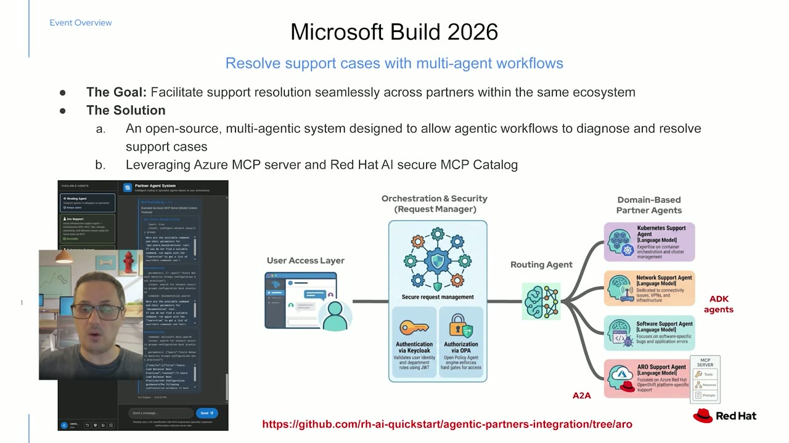
{kind=link}
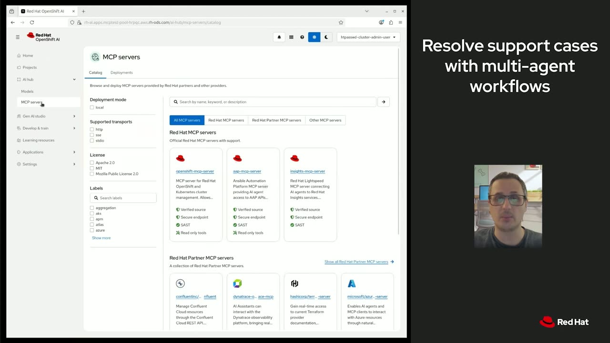
{kind=link}
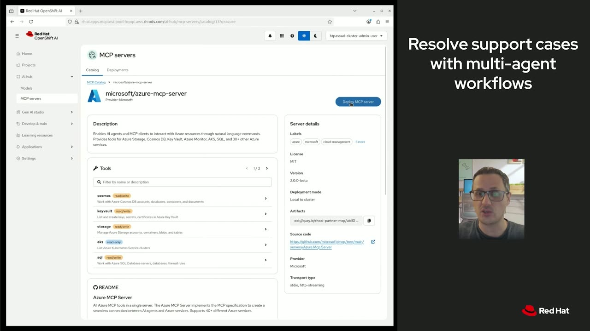
{kind=link}
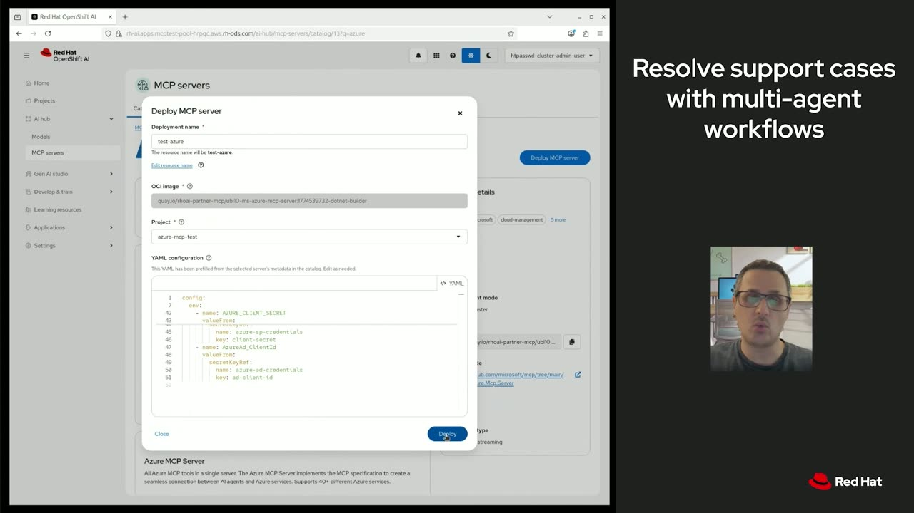
{kind=link}
{kind=link}
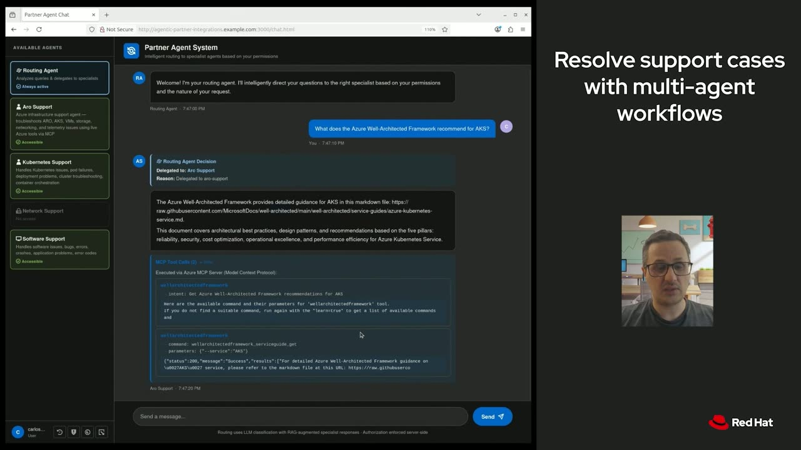
{kind=link}
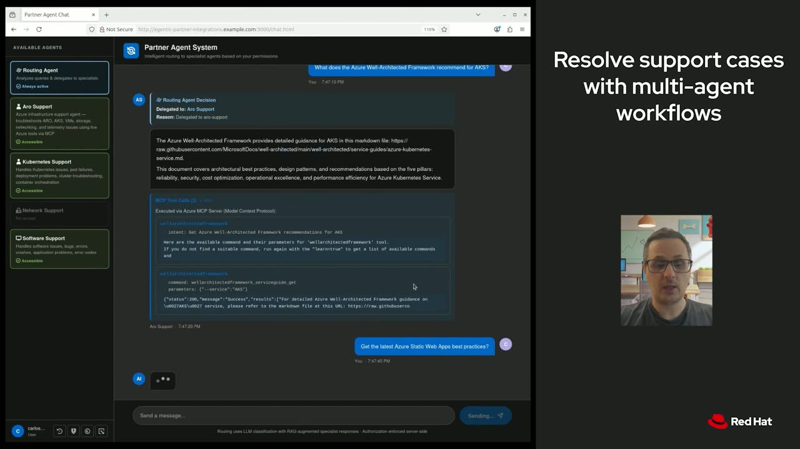
{kind=link}
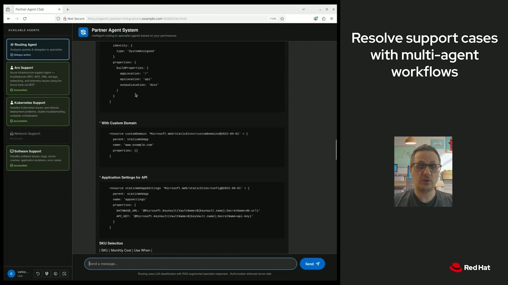
{kind=link}
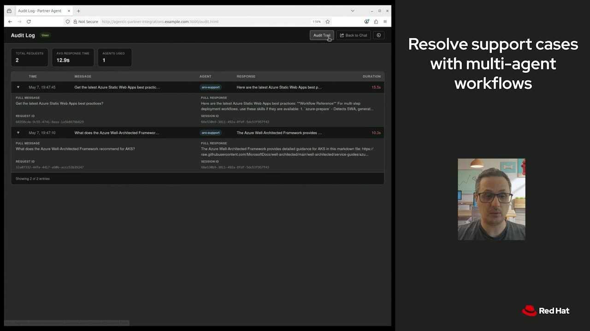
{kind=link}
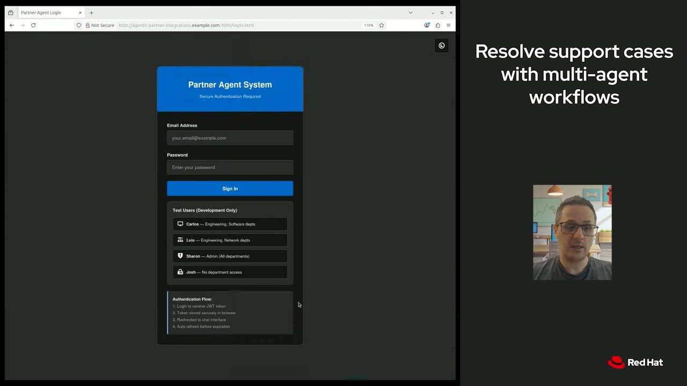
{kind=link}
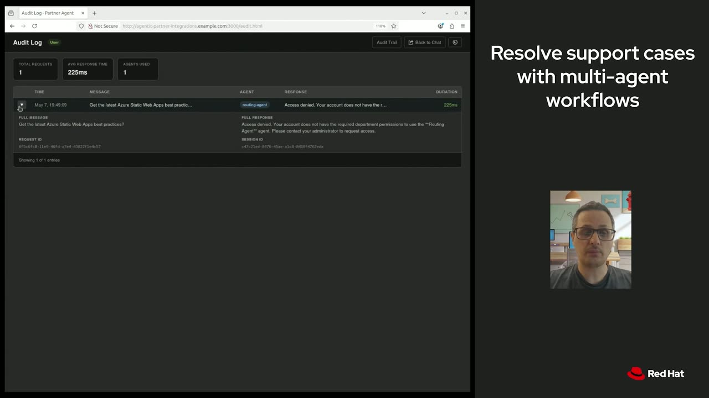
{kind=link}
Transcript
Show / hide transcript (5,946 chars)
[00:00:01] CARLOS CAMACHO: Hello, everyone. [00:00:02] We're Carlos and Sharon from Red Hat, and today we're going [00:00:05] to show you how to deploy an MCP server from the MCP catalog [00:00:09] and then use it in a multi-agent application that will diagnose [00:00:14] and resolve support cases across different partner ecosystems. [00:00:19] It will be only five minutes, all live. [00:00:22] Let's go. [00:00:24] What are we going to address in this demo? [00:00:27] We're going to facilitate a support resolution [00:00:29] across different partners within the same ecosystem. [00:00:33] We created a simple yet powerful open-source multi-agentic system [00:00:38] that is designed to allow agentic workflows [00:00:40] to diagnose and resolve problems. [00:00:42] We're leveraging the Azure MCP server [00:00:45] and Red Hat AI secure MCP catalog within this solution. [00:00:50] We have different layers. [00:00:52] The first one is the user access layer, [00:00:54] which is a PatternFly web application that allow us [00:00:58] to interact with a chat interface [00:01:00] with the different routing and support agents. [00:01:04] The first part is the orchestration [00:01:06] and security layer, which will be handling all the [00:01:10] authentication, authorization, and audit. [00:01:14] Then, we have the routing agent, which is in charge [00:01:17] of routing the requests from the users to the specific agent [00:01:22] that is helping you on troubleshooting your issues. [00:01:26] In this particular case, we have A2A as the communication layer, [00:01:31] and we use ADK to develop all the agents we have in this demo. [00:01:38] So let's start with the MCP catalog. [00:01:41] The OpenShift AI MCP catalog gives you pre-built MCP servers [00:01:44] that you can browse, pick, and deploy to your cluster. [00:01:48] In this case, we will be deploying the Azure MCP server [00:01:51] to our Red Hat OpenShift cluster. [00:01:53] You just have to pick the deployment name, the project, [00:01:56] and set up all the configurations details [00:01:58] to connect to your Azure tenant. [00:02:01] The catalog will handle the containerd image, [00:02:04] the configuration, and all the authentication [00:02:06] through managed identity. [00:02:08] In this case, we will not be writing any glue code. [00:02:11] We won't be building any custom integration. [00:02:14] We will just deploy from the catalog the MCP server, [00:02:17] and we will consume that as a regular workload. [00:02:20] Once you configure all the details, you just have to click [00:02:23] on "Deploy the Azure MCP server," and you just need [00:02:27] to wait until the operator runs the deployment, and you have it [00:02:31] up and running for you to use. [00:02:36] Now, we will log in into our quickstart. [00:02:39] I will use a user with enough access [00:02:41] to our Azure support agent to show how it works. [00:02:45] In this case, you can see that I have access to three [00:02:48] out of four agents, including the Azure support agent, [00:02:51] and we are going to start asking questions out of the box. [00:02:55] In this case, I'm asking [00:02:56] about the Well-Architected Framework for AKS. [00:03:00] The routing agent is detecting the intent of our request, [00:03:04] and it's delegating the execution [00:03:07] to the Azure support agent, [00:03:08] which is wrapping the Azure MCP server, [00:03:12] and we can see the output [00:03:14] and all the MCP tools that were executed. [00:03:16] Usually, the first one is about the intent of our request, [00:03:20] and the second one is the actual execution of the MCP tool, [00:03:25] giving the correct answer. [00:03:27] We can ask for other things, like, for example, [00:03:30] best practices for developing Azure web applications. [00:03:35] In the same way, the routing agent is detecting the intent. [00:03:39] It's doing the routing of the request. [00:03:42] And then we have the specific MCP tools being executed. [00:03:47] In this case, we can see that the output is a markdown file [00:03:51] with all these best practices we were asking about. [00:03:55] We can see that the routing agent delegated the execution [00:03:59] to the Azure support agent, we see the output, [00:04:02] and then at the end, we see the MCP tools that were called. [00:04:06] Again, the first one about the intent, and second one [00:04:09] with the actual output we're seeing in the chat window. [00:04:13] We can also see the audit log of the applications [00:04:16] because we store all the events using OpenTelemetry. [00:04:21] And we have the Audit Trail with all the security events stored, [00:04:25] and we can see, for example, all the users have access [00:04:29] to specific groups, and we can see [00:04:34] if the requests were accepted or denied. [00:04:38] Now, we will test again the quickstart, but using a user [00:04:43] without access to any of the agents. [00:04:45] I will log in as Josh. [00:04:48] You can see here that Josh doesn't have access to any [00:04:51] of the agents, and when we ask a question, [00:04:55] the routing agent will deny this request. [00:04:59] In the same way, we can see this event in the audit log, [00:05:04] or we can see the traces in the audit trail. [00:05:10] In this case, you can see that Josh doesn't belong [00:05:13] to any department, so any of the agents will be able [00:05:16] to answer his requests. [00:05:20] And this is all. [00:05:22] Thank you.